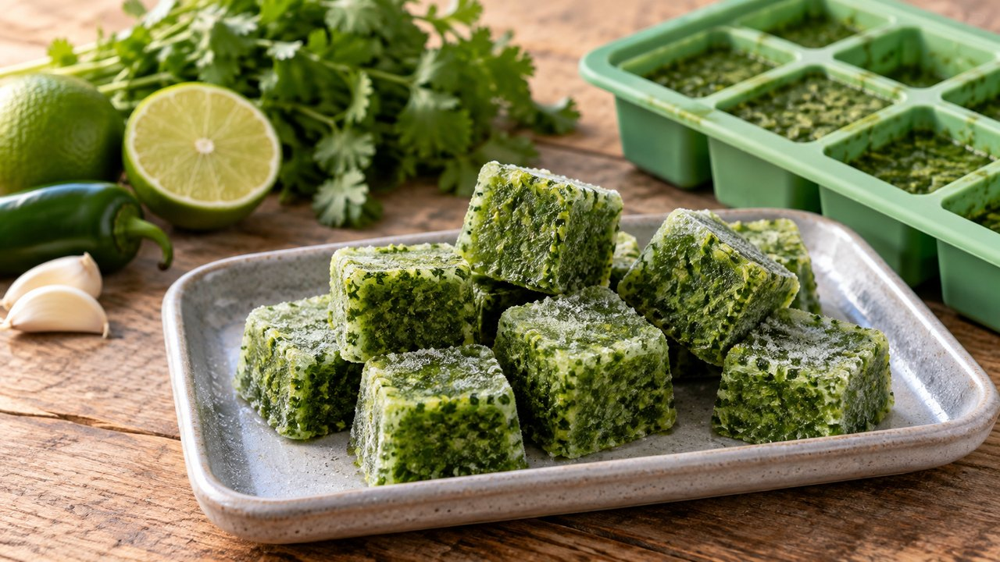

Cilantro-Citrus Salsa Starter
Mexican · Freezing · About 20 min active prep; total estimate 4 hr 20 min including freezing. Follow the doneness endpoint rather than the clock.
Yield: Variable; measure tablespoon portions

Ingredients
- 2 oz fresh cilantro leaves and tender stems
- 1 jalapeño, stemmed and roughly chopped
- 2 garlic cloves, peeled
- ¼ cup fresh lime juice or Meyer lemon juice
- ¼ cup cold water
Directions
- Rinse cilantro and pepper, and remove damaged leaves. Wear gloves for the jalapeño.
- Blend cilantro, jalapeño, garlic, citrus juice and water into a coarse sauce. Citrus here is for flavor, not validated preservation acidity.
- Immediately portion by tablespoon into a clean small silicone tray and freeze. Transfer solid portions to a labeled freezer bag.
- For serving, thaw only the amount needed in the refrigerator. Stir 2 tbsp starter into 1 cup chopped fresh tomatoes or cooked beans, then season and add fresh citrus to taste. Serve promptly and keep cold.
Notes & serving ideas
Use lime for a sharper flavor or Meyer lemon for a gentler citrus note. Frozen cilantro loses fresh texture, so finish with fresh leaves if available. No room-temperature fermentation or canning.
Harvest reference batch: 2 oz cilantro. Only this primary crop is deducted; secondary ingredients and finished yields are not calculated.
Review & safe storage
Original recipe: Family Recipes culinary preparation informed by the references below; the exact formula and storage life have not been laboratory validated or kitchen-tested here. References do not validate it for canning.
Keep frozen at 0°F (−18°C) or below. Thaw in the refrigerator at 40°F (4°C) or below, or use directly in cooking as directed. Use thawed portions within 3 days as a conservative household practice. This recipe is not shelf-stable.
Work with clean hands, sound produce and clean equipment. Refrigerate prepared perishables promptly, within 2 hours (1 hour above 90°F / 32°C); cool hot mixtures in shallow small containers. Never thaw perishables on the counter.